Introduction to Exploratory data analysis using FSharpGephiStreamer and Gephi
23/1/2019 (applies to all site/dowload requests done for this document) ; Kevin Schneider
Table of contents
Introduction
Exploratory data analysis is an essential part of data analysis, especially if you are working with large datasets. It is always helpful to visualize your data to have an idea of the tendencies and structure of it. In the context of networks, gephi has proven to be a powerful tool various CSB projects for this exact purpose.
For the purpose of this tutorial/walkthrough, we will create a node and edge list from real data and stream those to gephi. Afterwards we will explore the resulting network a little.
However, this is not intended to be a guide on how to use gephi in general, although a few words will be said about the things done inside gephi to visualize the network.
Note: It is currently planned to flesh out the analysis of the network to become a full blog post on our blog. A link will be added here when that is done.
The dataset
In computer science and information science, an ontology encompasses a representation, formal naming, and definition of the categories, properties, and relations between the concepts, data, and entities that substantiate one, many, or all domains. Every field creates ontologies to limit complexity and organize information into data and knowledge. (from wikipedia)
Ontologies are providing an extensible and queryable knowledge base. In the context of computational biology, they are a valuable tool to characterize all kinds of biological processes and/or entities and are often used to see if specific types of these are enriched in an experiment (ontology enrichment).
The dataset of interest for this tutorial is the knowledgebase provided by the Gene Ontology Consortium (also known as GO). It provides concepts/classes used to describe gene function, and relationships between these concepts.
One of the main uses of the GO is to perform enrichment analysis on gene sets. For example, given a set of genes that are up-regulated under certain conditions, an enrichment analysis will find which GO terms are over-represented (or under-represented) using annotations for that gene set. (from GO's website)
The full ontology can be downloaded here.
Exploratory data analysis using FSharpGephiStreamer & Gephi
The data was originally parsed using the Obo parser from our bioinformatics toolbox BioFSharp. if you want to see the code , expand the section below. However, to avoid dependencies and assure reproducibility of this tutorial the data was also prepared to be usable without any dependency other than FSharpGephiStreamer itself. The Node and Edgelists can be found as .csv files here. If you want to reproduce this analysis, just parse these files and construct the node and edge types from them. Just keep in mind that you loose a lot of information contained in the obo file that way, as the csv files only contains term names and is-A relationships
Parsing the csv files can be done without dependencies using this code:
1: 2: 3: 4: 5: 6: 7: 8: 9: 10: 11: 12: 13: 14: 15: 16: 17: 18: 19: |
|
Data aquisition
First we parse the .obo file using BioFSharps Obo parser:
1: 2: 3: 4: 5: 6: 7: 8: 9: 10: |
|
1:
|
|
Preparing nodes and edges
We define nodes as GO terms as our nodes and edges as Is-A relations between those terms. This will result in a network that shows how the knowledgebase is structured. There are a few interesting thigs that can be visualized by this:
- The most descriptive terms: The nodes with the highest In-Degree are the terms which describe the most knowledge in the network. Maybe we can also infere from this what the main fields of (geneomic) biological research are.
- Sub graphs of the network may show that there are different well described knowledge types that are highly differentiaded from each other
- Connectivity between hubs: Terms that connect subgraphs or hubs and act as 'knowledge glue'
However, there is much more information in the obi file than these relationships. Visualizing other relationships is a topic for another day.
1: 2: |
|
1: 2: 3: 4: 5: 6: 7: 8: 9: 10: 11: 12: 13: 14: 15: 16: 17: 18: 19: 20: 21: 22: 23: 24: 25: 26: 27: 28: 29: 30: 31: 32: 33: 34: 35: 36: 37: 38: 39: 40: 41: 42: 43: 44: 45: 46: 47: 48: 49: |
|
Streaming to gephi
The Grammar module provides a set of rules that will convert the streamed data into JSON objects which gephi will understand.
To stream the nodes and edges to Gephi, we need a converter function for both. This function will take:
The edge/node
A list of Grammar attributes that define the mapping of attributes of the data to Gephi-readable attributes
We then use functional compostion with the Streamer.addNode/Streamer.addEdge functions to create our final addNode/Edge functions.
1: 2: 3: 4: 5: 6: 7: 8: 9: 10: 11: 12: 13: 14: 15: 16: 17: 18: 19: 20: 21: 22: 23: 24: 25: 26: |
|
Thats it. in roughly 40 lines of code we streamed a complete knowledge graph with 47345 nodes and 77187 edges to gephi. The network is now ready to be explored.
Results
The network
After applying some styles in the preview section (e.g. black background, rounded edges) the final rendered network looks like this:
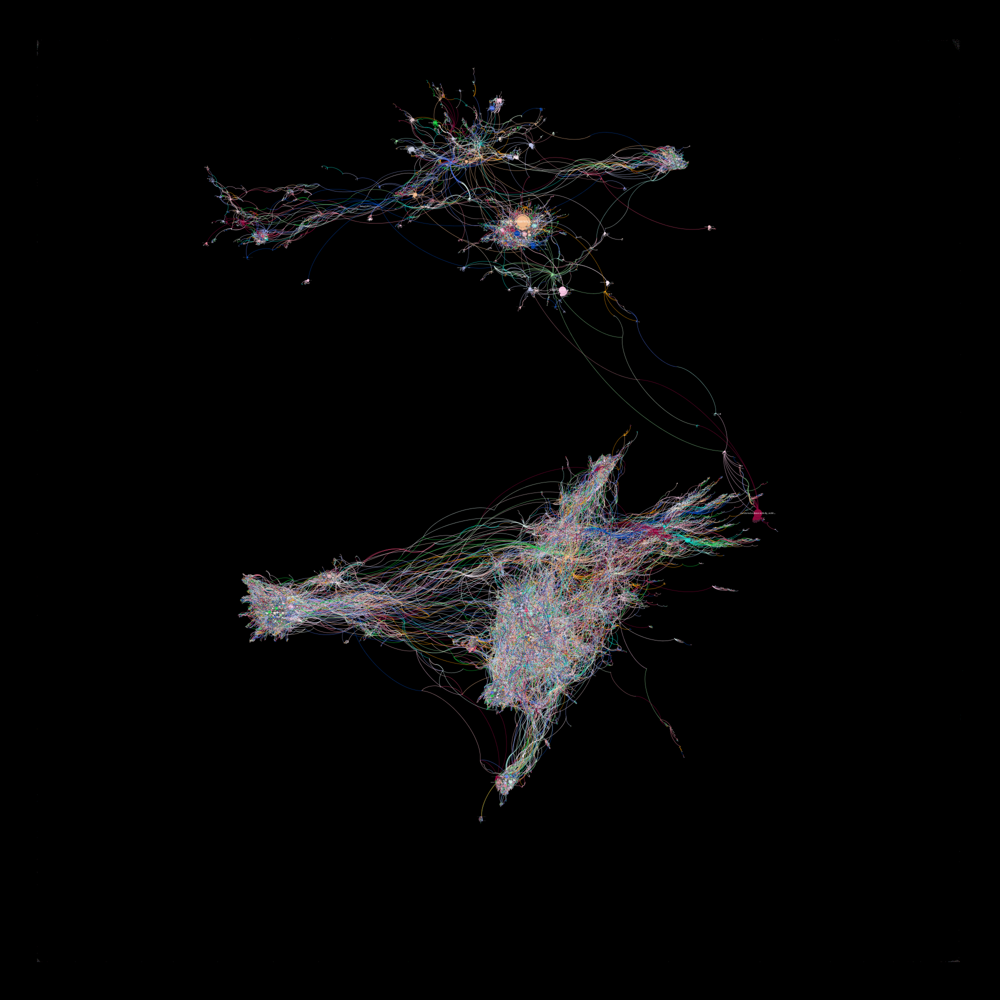
Network sections
By eye, there are 9 large communities in the network, clustering knowledge about the following processes/entities (click to view a close-up):
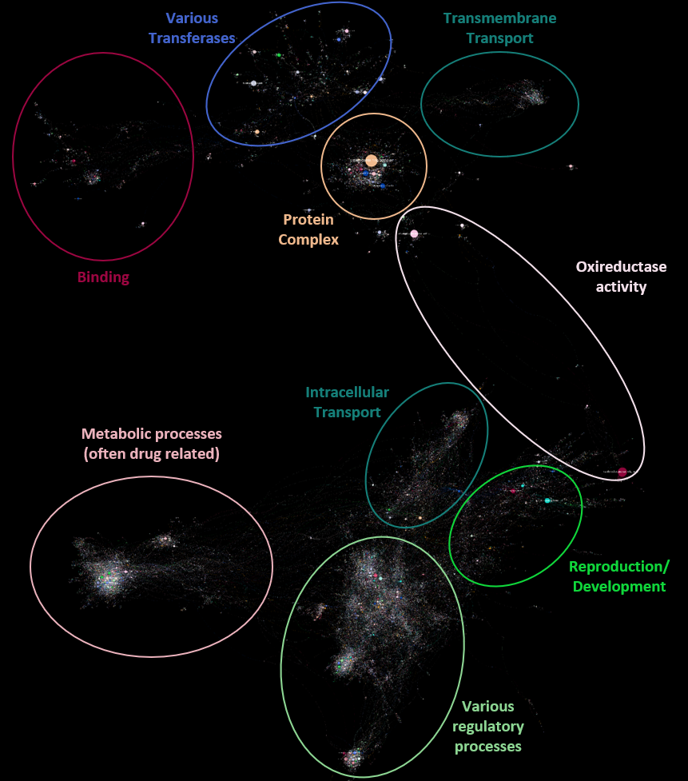Metrics
Average Degree & Degree distribution
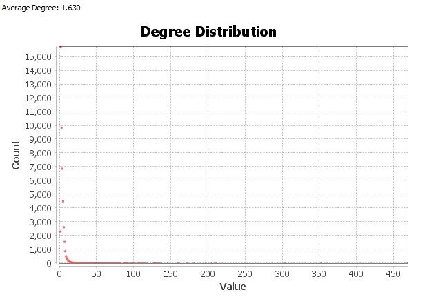
The average Degree is 1.63. The degree distribution is highly right-skewed (meaning many nodes have a low degree, and there exist hubs with high degree). This is a property of a real network.
Modularity
Calculating the network modularity with a low resolution, the large communities correlate well with the previous by-eye observation, although some of these communities split into large sub-communities: The overall modularity of the network with a resolution of 3 is 0.89 (high modularity).
Below is the network with nodes colored by their community membership:
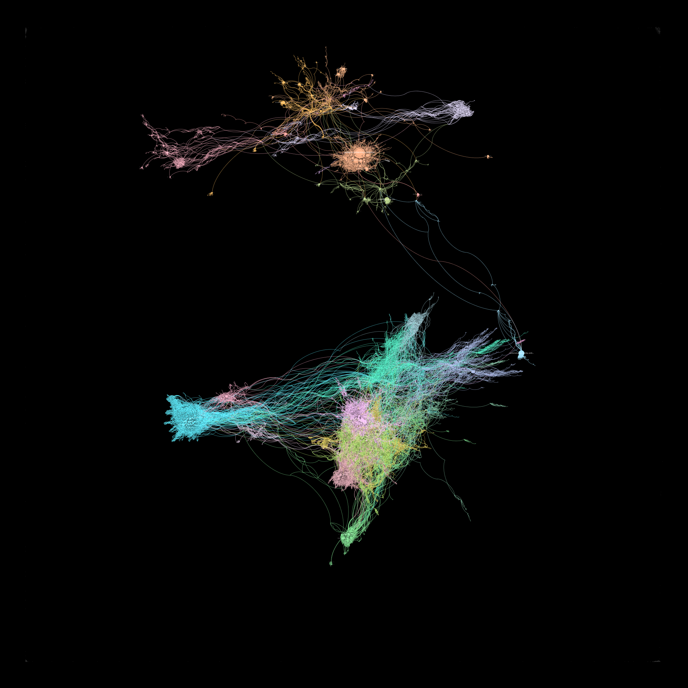
Close up of some communities
Binding
Back to overview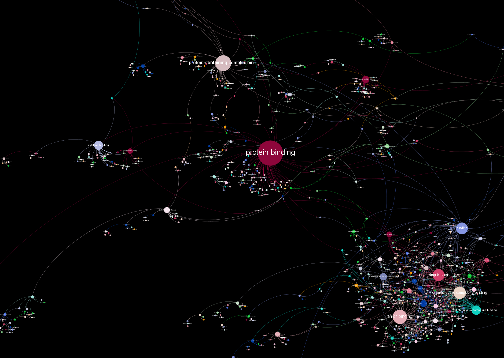
Transferases
Back to overview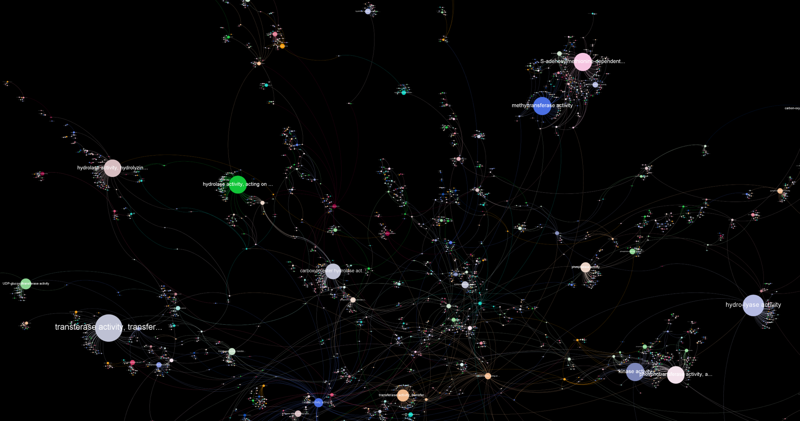
Regulation
Back to overview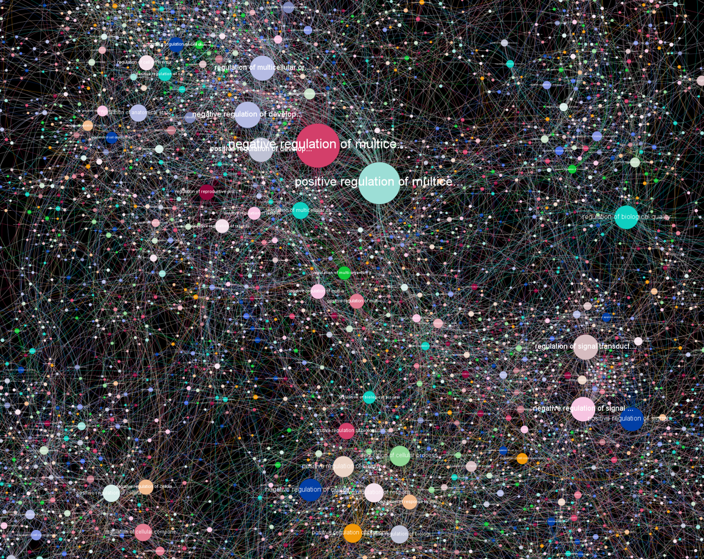
Protein-Complex
Back to overview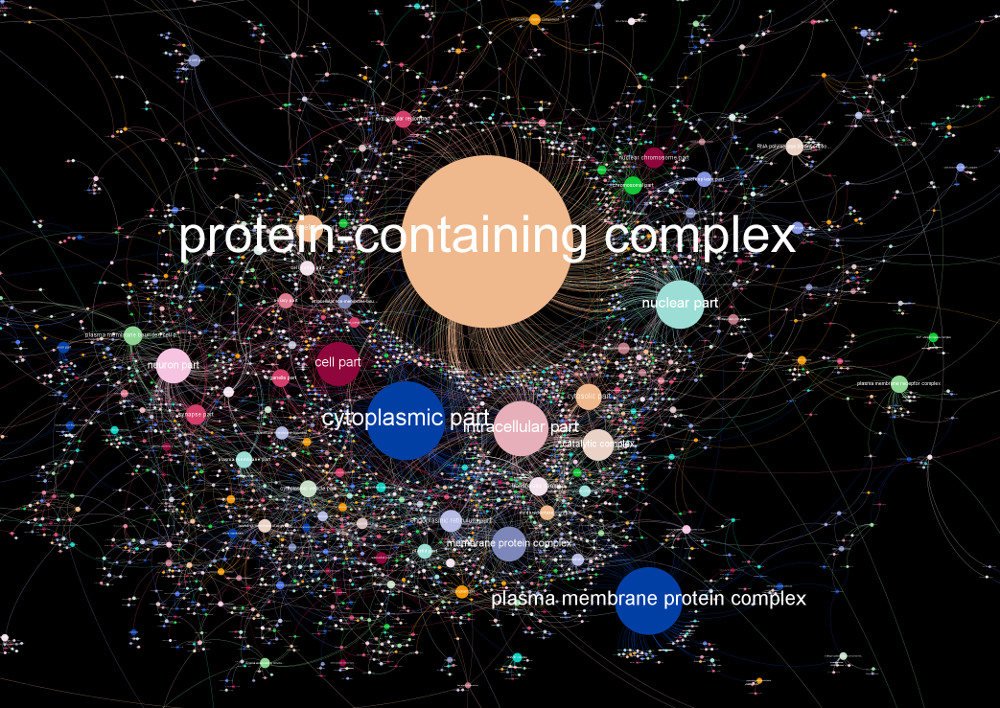
Metabolic-Processes
Back to overview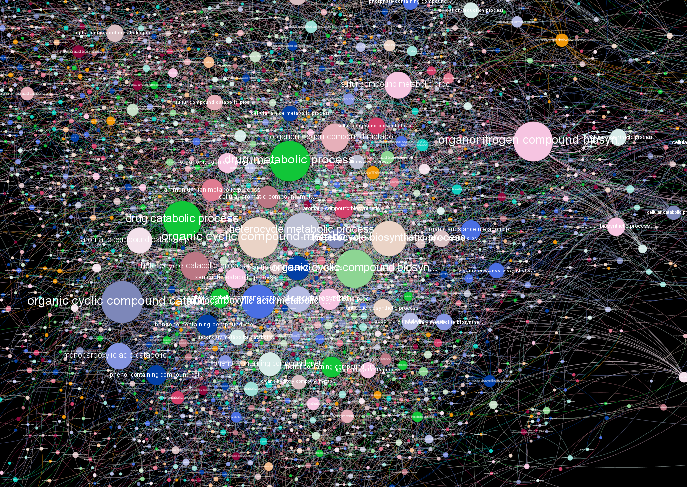
Oxireductases
Back to overview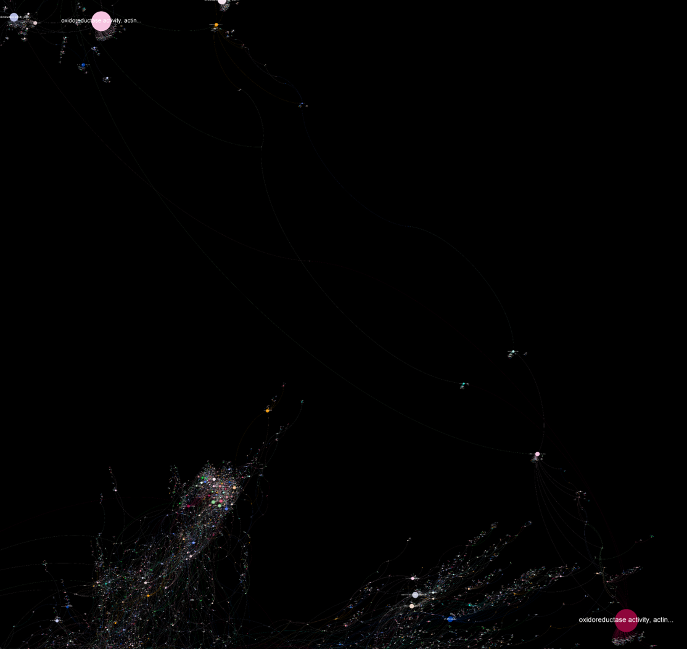
Intracellular-Transport
Back to overview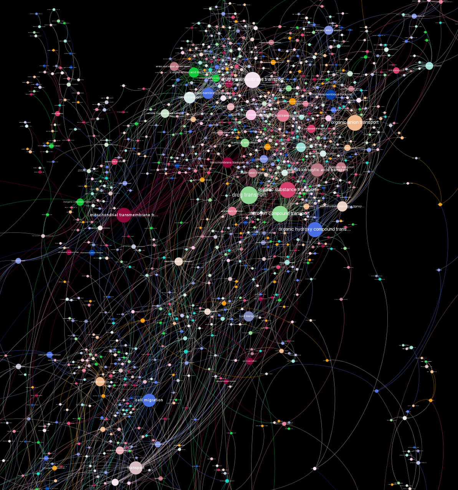
Reproduction
Back to overview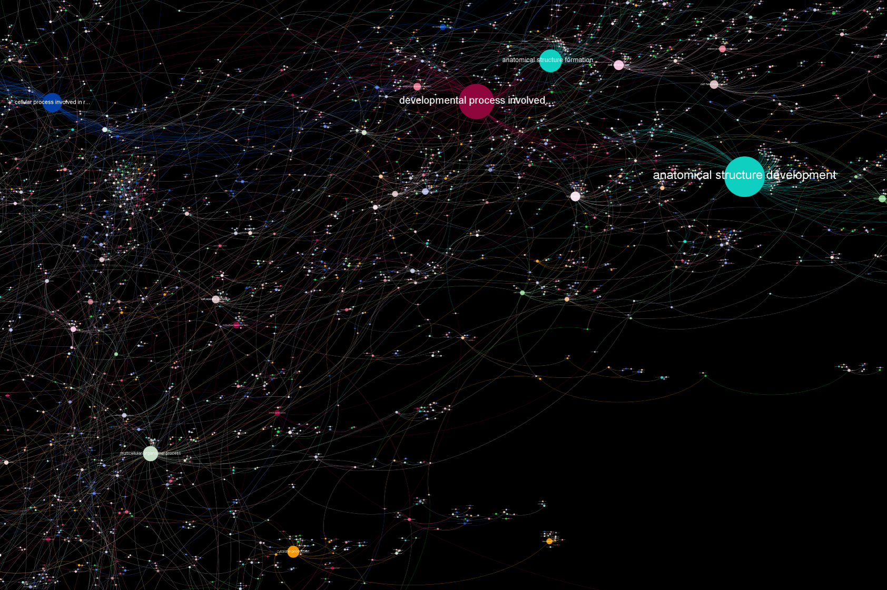
Transmembrane-Transport
Back to overview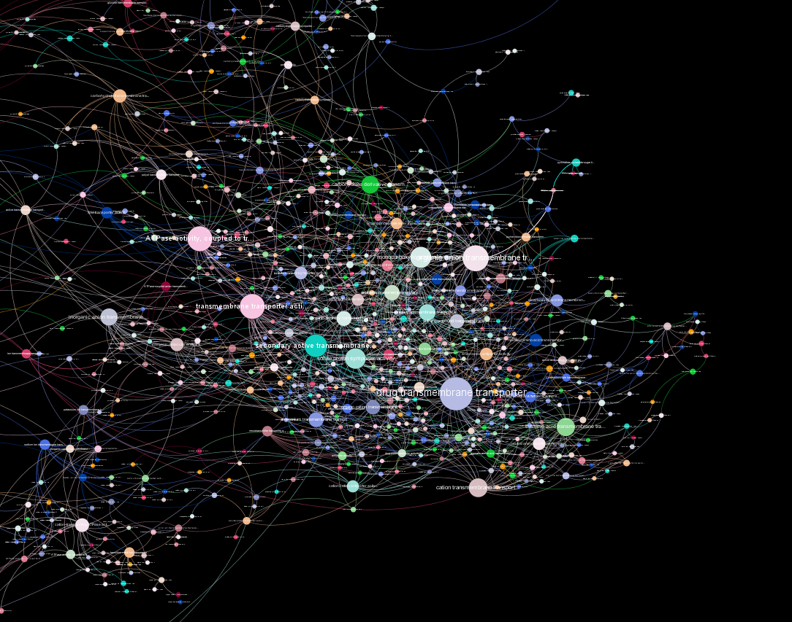
from BioFSharp.IO
from FSharpAux.IO
module Seq
from FSharpAux
--------------------
module Seq
from Microsoft.FSharp.Collections
--------------------
type Seq =
static member fromFile : filePath:string -> seq<string>
static member fromFileWithCsvSchema : filePath:string * separator:char * firstLineHasHeader:bool * ?skipLines:int * ?skipLinesBeforeHeader:int * ?schemaMode:SchemaModes -> seq<'schema>
static member fromFileWithSep : separator:char -> filePath:string -> seq<string []>
static member toCSV : separator:string -> header:bool -> data:seq<'a> -> seq<string>
static member write : path:string -> data:seq<'a> -> unit
static member writeOrAppend : path:string -> data:seq<'a> -> unit
from FSharpGephiStreamer
{Id: string;
TermDescription: string;
NameSpace: string;
Color: Color;}
Simplified GO Term as node
val string : value:'T -> string
--------------------
type string = System.String
GONode.Color: Color
--------------------
type Color =
{A: byte;
R: byte;
G: byte;
B: byte;}
module Colors
from FSharpGephiStreamer
--------------------
module Colors
from FSharpAux
type Color =
{A: byte;
R: byte;
G: byte;
B: byte;}
--------------------
type Color =
{A: byte;
R: byte;
G: byte;
B: byte;}
Creates GONode
{A: byte;
R: byte;
G: byte;
B: byte;}
{Id: int;
Source: string;
Target: string;
TargetColor: Color;}
Represents the Is_A relationship of GO terms as a directed edge
val int : value:'T -> int (requires member op_Explicit)
--------------------
type int = int32
--------------------
type int<'Measure> = int
Creates GOEdge
Node list containing all GO terms
module List
from FSharpAux
--------------------
module List
from Microsoft.FSharp.Collections
--------------------
type List<'T> =
| ( [] )
| ( :: ) of Head: 'T * Tail: 'T list
interface IReadOnlyList<'T>
interface IReadOnlyCollection<'T>
interface IEnumerable
interface IEnumerable<'T>
member GetSlice : startIndex:int option * endIndex:int option -> 'T list
member Head : 'T
member IsEmpty : bool
member Item : index:int -> 'T with get
member Length : int
member Tail : 'T list
...
module Table
from FSharpGephiStreamer.Colors
--------------------
module Table
from FSharpAux.Colors
module StatisticalGraphics24
from FSharpGephiStreamer.Colors.Table
--------------------
module StatisticalGraphics24
from FSharpAux.Colors.Table
Edge list containing all Is-A relationships in the knowledge base
from FSharpGephiStreamer
| Size of float
| Color of Color
| EdgeType of EdgeDirection
| PositionX of float
| PositionY of float
| PositionZ of float
| Label of string
| UserDef of string * obj
from FSharpGephiStreamer
| Directed
| Undirected
static member convert : (EdgeDirection -> bool)
val seq : sequence:seq<'T> -> seq<'T>
--------------------
type seq<'T> = System.Collections.Generic.IEnumerable<'T>
type StreamReader =
inherit TextReader
new : stream:Stream -> StreamReader + 10 overloads
member BaseStream : Stream
member Close : unit -> unit
member CurrentEncoding : Encoding
member DiscardBufferedData : unit -> unit
member EndOfStream : bool
member Peek : unit -> int
member Read : unit -> int + 1 overload
member ReadAsync : buffer:char[] * index:int * count:int -> Task<int>
member ReadBlock : buffer:char[] * index:int * count:int -> int
...
--------------------
StreamReader(stream: Stream) : StreamReader
(+0 other overloads)
StreamReader(path: string) : StreamReader
(+0 other overloads)
StreamReader(stream: Stream, detectEncodingFromByteOrderMarks: bool) : StreamReader
(+0 other overloads)
StreamReader(stream: Stream, encoding: Encoding) : StreamReader
(+0 other overloads)
StreamReader(path: string, detectEncodingFromByteOrderMarks: bool) : StreamReader
(+0 other overloads)
StreamReader(path: string, encoding: Encoding) : StreamReader
(+0 other overloads)
StreamReader(stream: Stream, encoding: Encoding, detectEncodingFromByteOrderMarks: bool) : StreamReader
(+0 other overloads)
StreamReader(path: string, encoding: Encoding, detectEncodingFromByteOrderMarks: bool) : StreamReader
(+0 other overloads)
StreamReader(stream: Stream, encoding: Encoding, detectEncodingFromByteOrderMarks: bool, bufferSize: int) : StreamReader
(+0 other overloads)
StreamReader(path: string, encoding: Encoding, detectEncodingFromByteOrderMarks: bool, bufferSize: int) : StreamReader
(+0 other overloads)
member BodyName : string
member Clone : unit -> obj
member CodePage : int
member DecoderFallback : DecoderFallback with get, set
member EncoderFallback : EncoderFallback with get, set
member EncodingName : string
member Equals : value:obj -> bool
member GetByteCount : chars:char[] -> int + 3 overloads
member GetBytes : chars:char[] -> byte[] + 5 overloads
member GetCharCount : bytes:byte[] -> int + 2 overloads
...
System.String.Split(separator: string [], options: System.StringSplitOptions) : string []
System.String.Split(separator: char [], options: System.StringSplitOptions) : string []
System.String.Split(separator: char [], count: int) : string []
System.String.Split(separator: string [], count: int, options: System.StringSplitOptions) : string []
System.String.Split(separator: char [], count: int, options: System.StringSplitOptions) : string []